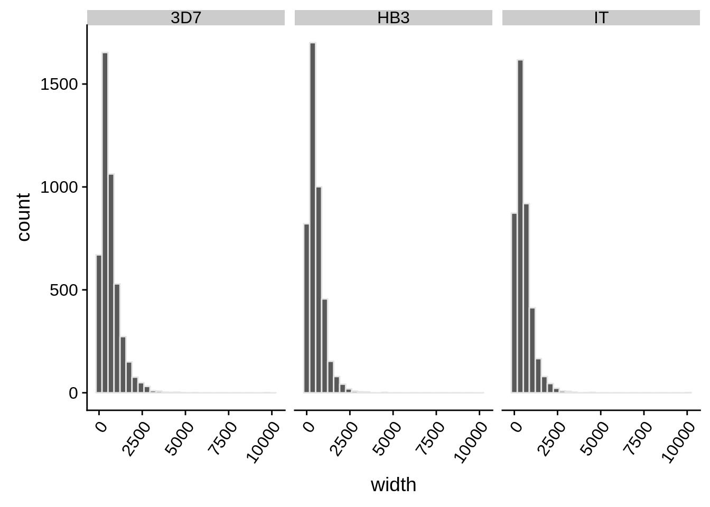
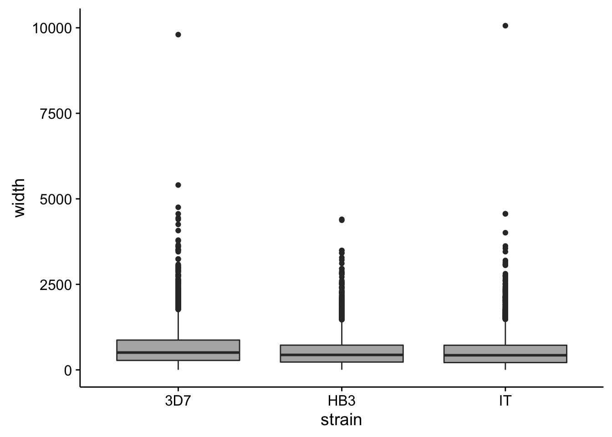
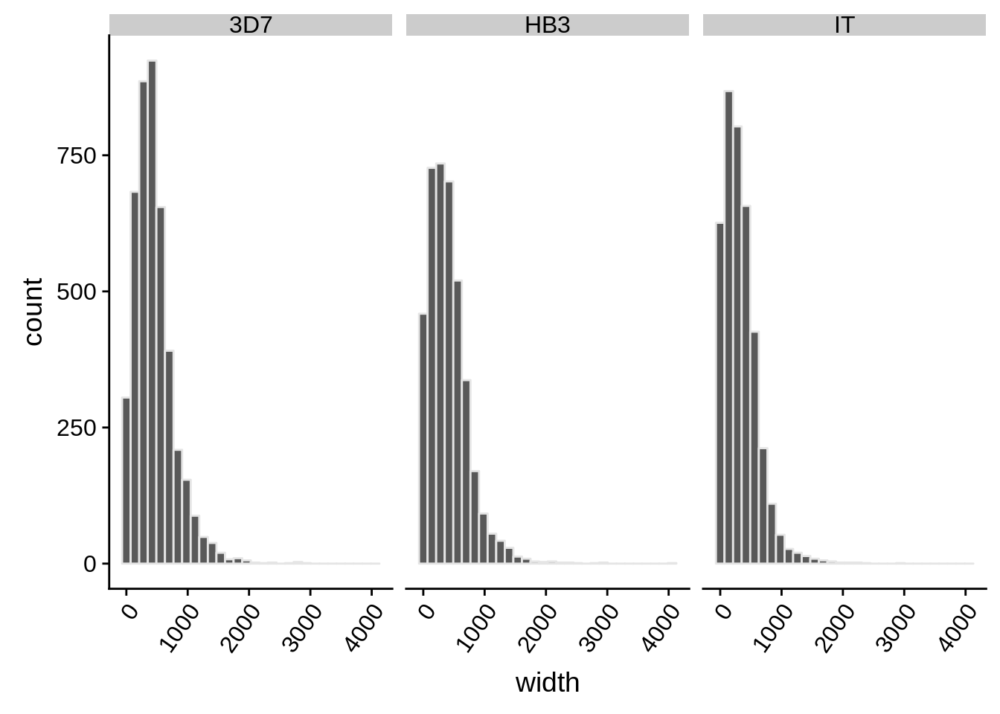
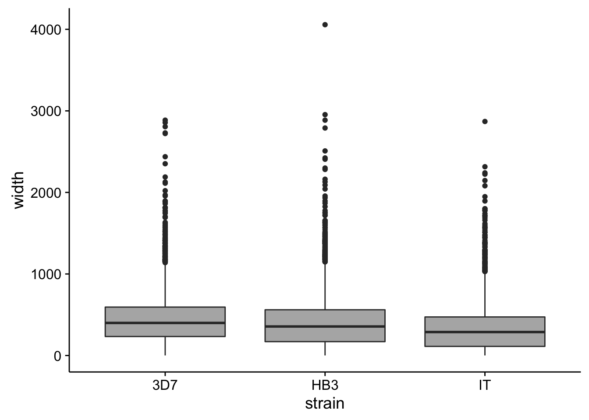

Last updated: 2017-03-30
Code version: 0e2e80a
There were several methods and data sets used to predict 5’ and 3’ UTRs.
The first method was using the RNA-seq data sets and continuous read coverage. Any continuous coverage found surrounding known transcripts that met a read threshold cutoff of 5 reads or more was added as a UTR to the transcript from which it extended depending on whether it was on the 5’ or 3’ end of the transcript. This was done for each strain inidividually.
The second method to predict 5’ UTRs was done by using a variant of nanoCAGE in order to tag the extreme ends of mRNA molecules and sequence them along with a synthetic oligo used for the pull down of these extreme ends. No 3’ UTRs of transcripts was predicted using this approach although both ends were tagged.
Finally, the 5’ mRNA capture data was used to correct 5’ UTR predictions in all strains IF there was coverage support from the RNA-seq data in that loci where the capture data predicted it to be. If there was no prediction based on the 5’ capture data, then coverage from the 3D7 strain was used to “repair” the 5’ UTRs as well.
These predictions were all combined into lists of “longest possible transcripts” for each strain. Priority was given to predictions:
First we should read in the resulting data:
# function to read in the data
read_utrs <- function(file, input_strain) {
df <- as.data.frame(rtracklayer::import.gff3(file)) %>%
dplyr::select(Parent,type,width)
df$strain <- input_strain
df$Parent <- as.character(df$Parent)
return(df)
}
utrs3d7 <- read_utrs("../output/final_utrs/longest_utrs_3d7_plasmodb_compatible.gff", "3D7")
utrshb3 <- read_utrs("../output/final_utrs/longest_utrs_hb3_plasmodb_compatible.gff", "HB3")
utrsit <- read_utrs("../output/final_utrs/longest_utrs_it_plasmodb_compatible.gff", "IT")
utrs <- rbind(utrs3d7,utrshb3,utrsit)What does the distribution of 5’ UTRs look like?
utrs %>%
dplyr::filter(type == "5UTR") %>%
ggplot(aes(x=width)) +
geom_histogram(color="grey90",bins=30) +
facet_grid(.~strain) +
theme(axis.text.x = element_text(angle = 55, hjust = 1))
utrs %>%
dplyr::filter(type == "5UTR") %>%
ggplot(aes(x=strain,y=width)) +
geom_boxplot(fill="grey70")
How do summary statistics vary between strains?
utrs %>%
dplyr::filter(type == "5UTR") %>%
dplyr::group_by(strain) %>%
dplyr::summarise(mean=mean(width),median=median(width),sd=sd(width))# A tibble: 3 × 4
strain mean median sd
<chr> <dbl> <dbl> <dbl>
1 3D7 662.6894 507 591.3160
2 HB3 540.8970 438 457.6042
3 IT 541.4937 428 498.9186What does the distribution of 3’ UTRs look like?
utrs %>%
dplyr::filter(type == "3UTR") %>%
ggplot(aes(x=width)) +
geom_histogram(color="grey90",bins=30) +
facet_grid(.~strain) +
theme(axis.text.x = element_text(angle = 55, hjust = 1))
utrs %>%
dplyr::filter(type == "3UTR") %>%
ggplot(aes(x=strain,y=width)) +
geom_boxplot(fill="grey70")
How do summary statistics vary between strains?
utrs %>%
dplyr::filter(type == "3UTR") %>%
dplyr::group_by(strain) %>%
dplyr::summarise(mean=mean(width),median=median(width),sd=sd(width))# A tibble: 3 × 4
strain mean median sd
<chr> <dbl> <dbl> <dbl>
1 3D7 453.9042 399.5 325.3769
2 HB3 411.2785 356.0 329.6666
3 IT 334.9430 288.0 283.9846One thing we were also interested in looking at was why the coverage UTRs some times suffered from “coverage drops”. If we assume that the AT content of the genome isn’t as much of an issue anymore now that we are using PCR-free library preparation and better priming of RNA molecules, then one other issue that could be causing these coverage drops are homopolymer tracts. Another reason we are making this assumption is because the CAGE tags support this conclusion. Where the 5’ UTR often falls short, there is a lack of supporting CAGE tags. If we look upstream, however, we can see CAGE tags AND coverage if we look at the DAFT-seq data.
In the current analysis, I’m forgetting to take into account introns when looking for the presence of long homopolymer tracts within predicted UTRs. Important questions include:
To address these questions, I extended 5’ and 3’ UTRs 100 base pairs beyond their predicted coverage TSS and TES, removed intron sequences, counted the number and length of homopolymer tracts, and compared whether longer homopolymer tracts tend to occur in UTRs that are shorter and vice versa.
sessionInfo()R version 3.3.2 (2016-10-31)
Platform: x86_64-apple-darwin15.6.0 (64-bit)
Running under: OS X El Capitan 10.11.6
locale:
[1] en_US.UTF-8/en_US.UTF-8/en_US.UTF-8/C/en_US.UTF-8/en_US.UTF-8
attached base packages:
[1] stats graphics grDevices utils datasets methods base
other attached packages:
[1] scales_0.4.1 cowplot_0.7.0 magrittr_1.5 stringr_1.2.0
[5] dplyr_0.5.0 purrr_0.2.2 readr_1.0.0 tidyr_0.6.1
[9] tibble_1.2 ggplot2_2.2.1 tidyverse_1.1.1
loaded via a namespace (and not attached):
[1] SummarizedExperiment_1.4.0 reshape2_1.4.2
[3] haven_1.0.0 lattice_0.20-34
[5] colorspace_1.3-2 htmltools_0.3.5
[7] stats4_3.3.2 rtracklayer_1.34.2
[9] yaml_2.1.14 XML_3.98-1.5
[11] foreign_0.8-67 DBI_0.5-1
[13] BiocParallel_1.8.1 BiocGenerics_0.20.0
[15] modelr_0.1.0 readxl_0.1.1
[17] plyr_1.8.4 zlibbioc_1.20.0
[19] Biostrings_2.42.1 workflowr_0.3.0
[21] munsell_0.4.3 gtable_0.2.0
[23] rvest_0.3.2 psych_1.6.12
[25] evaluate_0.10 labeling_0.3
[27] Biobase_2.34.0 knitr_1.15.1
[29] forcats_0.2.0 IRanges_2.8.1
[31] GenomeInfoDb_1.10.3 parallel_3.3.2
[33] broom_0.4.2 Rcpp_0.12.9
[35] backports_1.0.5 S4Vectors_0.12.1
[37] jsonlite_1.3 XVector_0.14.0
[39] Rsamtools_1.26.1 mnormt_1.5-5
[41] hms_0.3 digest_0.6.12
[43] stringi_1.1.2 GenomicRanges_1.26.3
[45] grid_3.3.2 rprojroot_1.2
[47] tools_3.3.2 bitops_1.0-6
[49] RCurl_1.95-4.8 lazyeval_0.2.0
[51] Matrix_1.2-8 xml2_1.1.1
[53] lubridate_1.6.0 assertthat_0.1
[55] rmarkdown_1.3 httr_1.2.1
[57] R6_2.2.0 git2r_0.18.0
[59] GenomicAlignments_1.10.0 nlme_3.1-131 This R Markdown site was created with workflowr